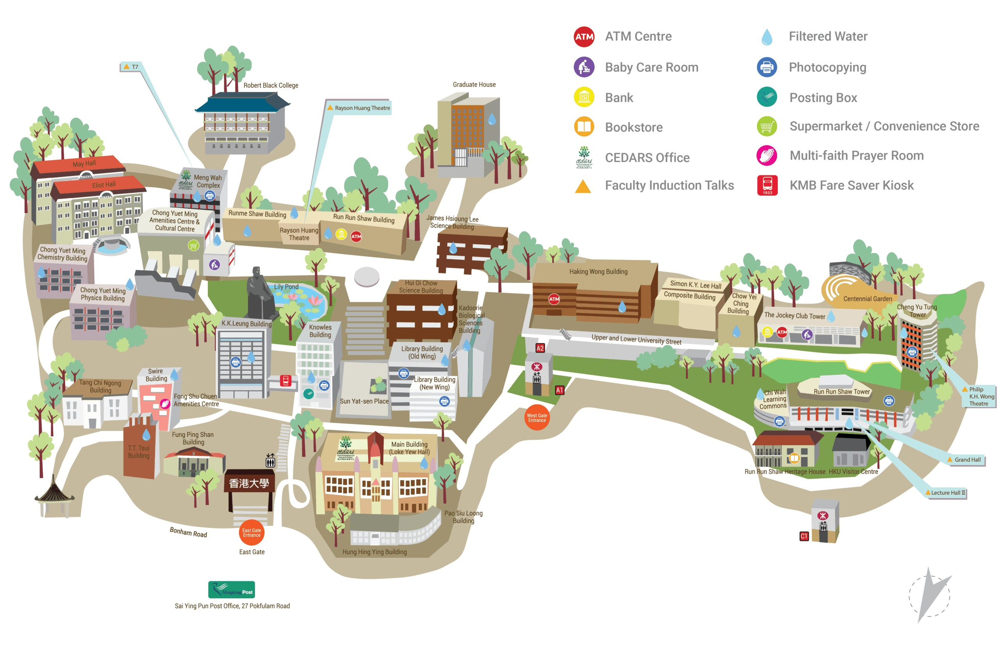

🍱 Food Map
🏛️ Visit Map
🚶 To RRS
Reset zoom
EN
中文
HKU Main Campus Map (Food Map)
Walking time shown is from RRS Building.
🗺️ Map
📋 List
Walking time shown is from RRS Building.
🚉 From HKU Exit A2

Where are you coming from?
🚉 HKU Station Exit A2
Cancel